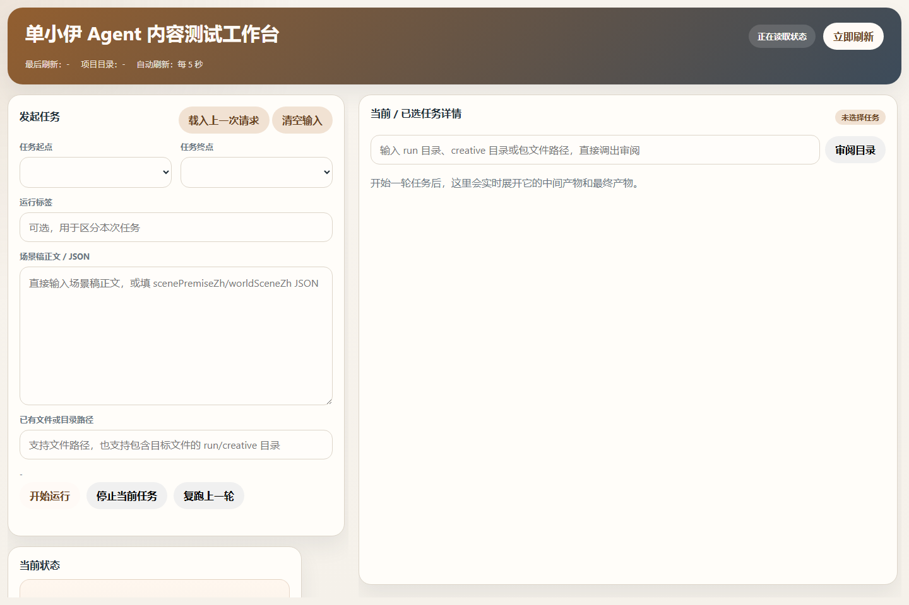
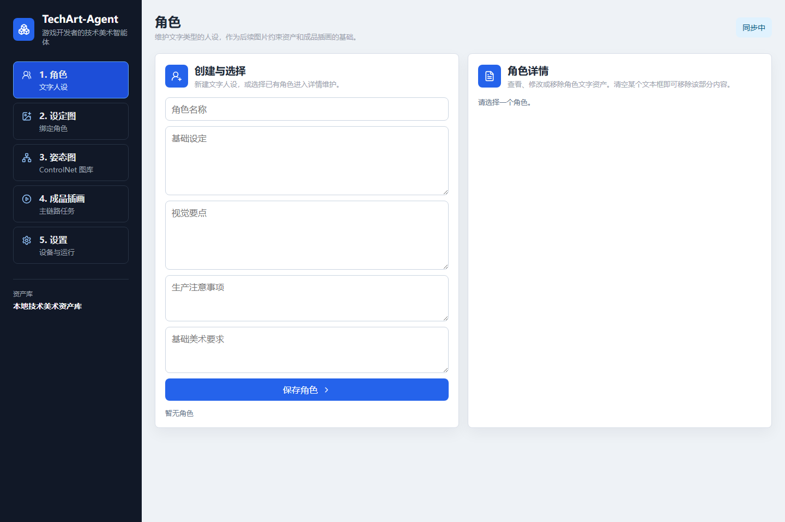
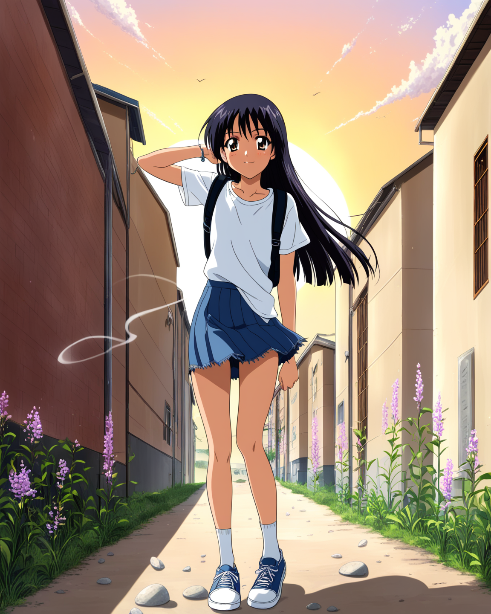
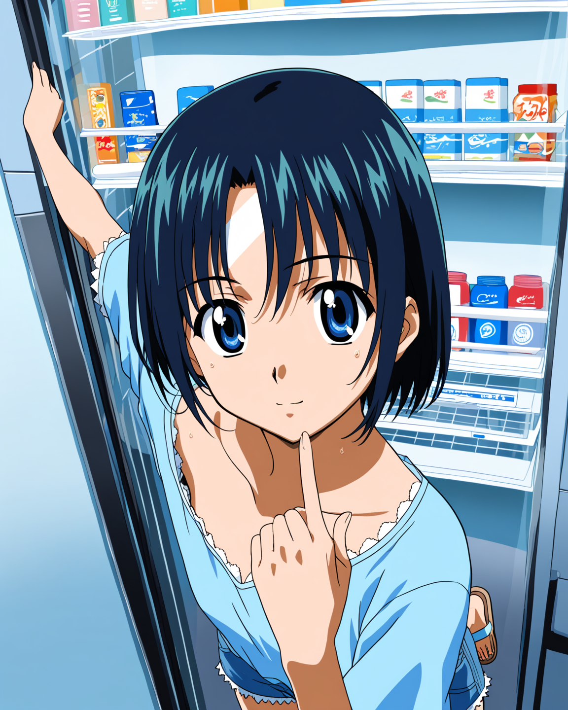
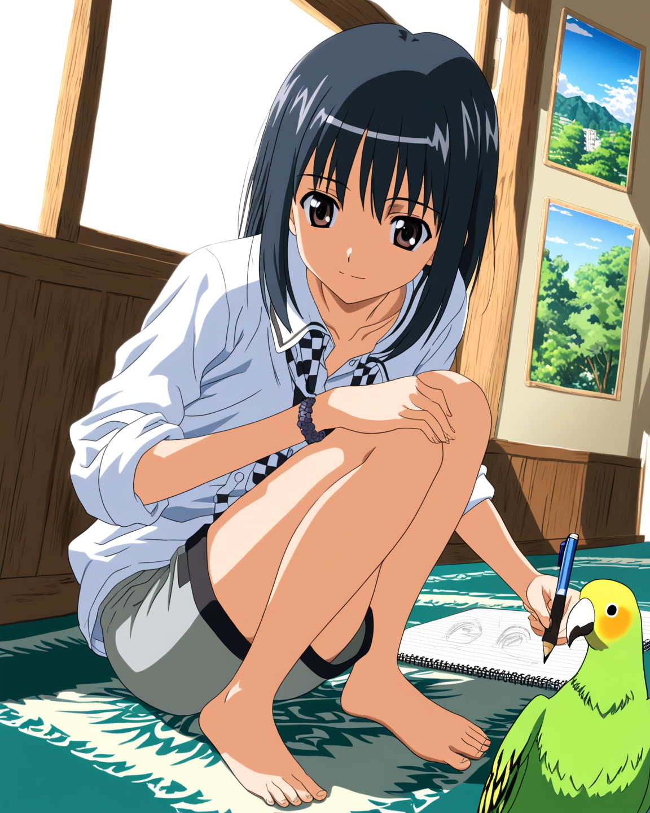
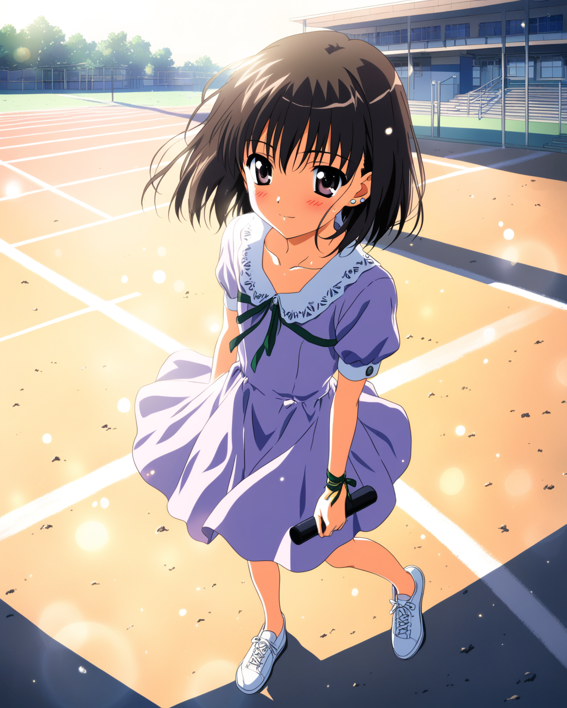
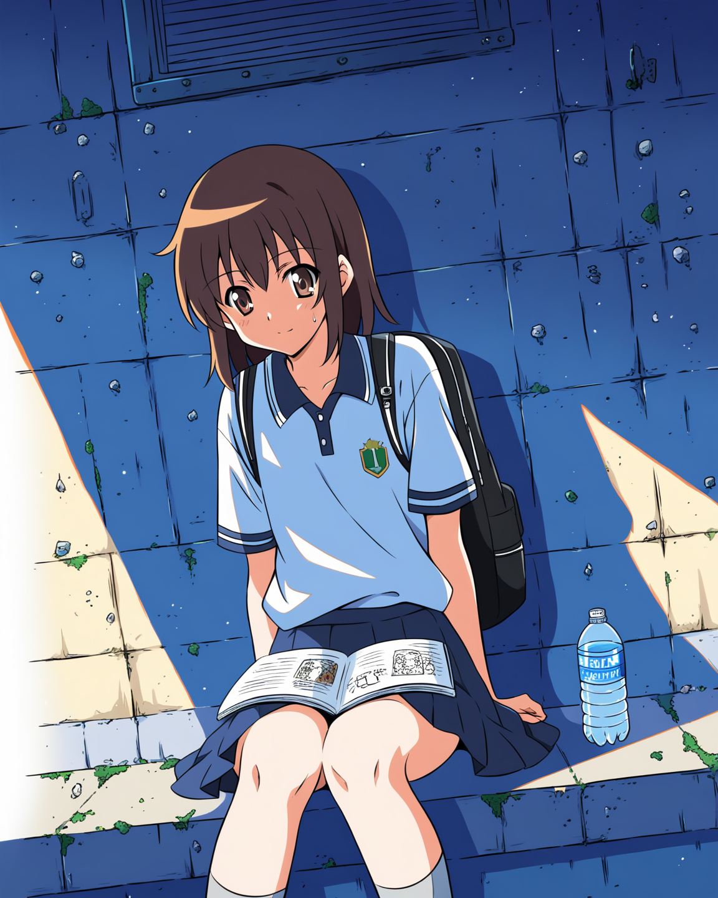
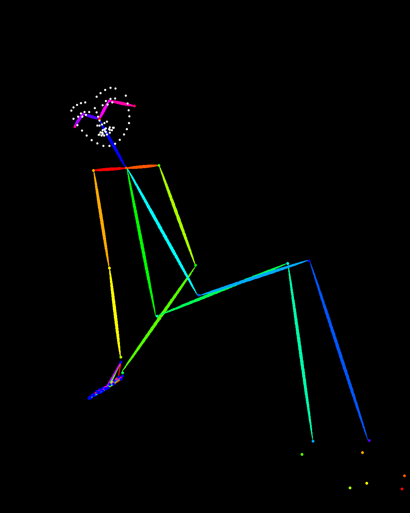
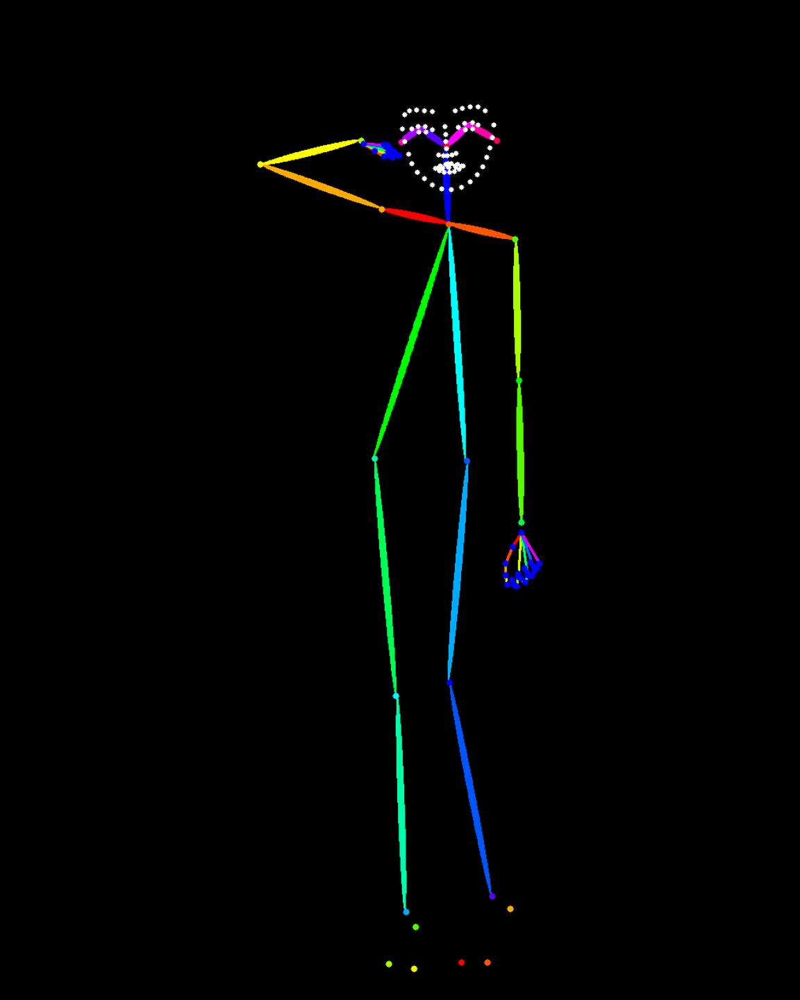

OpenWaifu-Agent 内容测试工作台
左侧发起任务，用户选择任务起点和终点，也可以直接输入场景稿或 run 目录。右侧用于审阅当前任务详情，能展开采样、设计稿、prompt、图片、发布记录等中间产物。
本作品展示一个真实 Agent 工作流：用户从角色和任务目标进入，系统可以采样外部灵感，生成世界场景稿、环境光影设计稿、服装造型设计稿、动作姿态设计稿、社媒文案、提示词和审查报告，最后交给本地 ComfyUI / TechArt 执行层生成图片并归档。


OpenWaifu-Agent 负责从任务入口、采样、设计稿、审阅、复跑和发布组织完整内容链路；TechArt-Agent 负责本地技术美术执行，管理角色、设定图、姿态图、成品插画和模型设置。
左侧发起任务，用户选择任务起点和终点，也可以直接输入场景稿或 run 目录。右侧用于审阅当前任务详情，能展开采样、设计稿、prompt、图片、发布记录等中间产物。
左侧按功能组织角色、设定图、姿态图、成品插画和设置。用户在这里维护本地技术美术资产，并把上游设计稿接入 ComfyUI 生成任务。
用户选择角色、输入场景，或让系统从实时采样开始。
Agent 从采样文本中提取灵感，结合角色档案生成世界场景稿。
环境光影、服装造型、动作姿态分别描述画面的空间、角色视觉和身体结构。
系统生成社媒文案，Prompt Builder 编译生图 prompt，Prompt Guard 审查冲突。
TechArt-Agent / ComfyUI 加载模型、LoRA、ControlNet 和工作流模板生成图片。
保存图片、提示词、审查报告、执行参数和发布记录，支持复跑和继续修改。
用户指出角色一致性、姿态、构图、风格或文案问题，进入下一轮生产。
收藏图、姿态图、设定图和运行记录沉淀为后续角色资产。
下面展示一次真实运行的阶段产物。运行目录为 `2026-04-28T15-38-30_run`，最终图被导入为 OpenWaifu-Agent 收藏成功基准。
Reddit / teenagers：帖子里出现 “sidequest maxing” 这个表达，讨论恋爱、家庭催促和青春期生活的荒诞感。
Agent 从这段外部语境里抓住“支线任务”和“青春期自我调侃”，把它转化为角色独处时的心理活动。
放学后的校园安静下来，单小伊独自坐在教学楼天台的边缘，双腿悬在空中轻轻晃荡。她刚看完手机里那条关于恋爱烦恼的帖子，忍不住轻轻笑了。
这一阶段已经确定地点、人物动作、情绪、手机线索、天台空间和夕阳时间。
午后五点半的暮光初现，主光从画面左侧斜斜打入。天空由低空的橘橙向头顶的浅靛蓝自然渐变，人物位于画面右侧三分之一处。
这一阶段明确主光源、前中背景、天空颜色、镜头景别和低角度构图。
黑色齐肩披肩细发在傍晚的风中被吹得微乱，白色短袖制服衬衫下摆在腰侧打结，深绀色校服百褶裙因坐姿和微风产生褶皱。
这一阶段把角色发型、校服、配饰、创可贴、手机和数学竞赛习题集写成视觉细节。
她坐在天台边缘，双腿悬空，膝盖并拢，上半身放松后倾，双臂伸直，双手手掌撑在身后两侧的水泥台面上。
这一阶段描述身体重心、手脚位置、视线方向和道具关系，给后续 prompt 与姿态控制提供依据。
放课后 (￣▽￣*)
运行记录中保留了自动生成文案和手动编辑后的最终文案。最终发布层使用的是用户确认后的版本。
1girl, shan_xiaoyi, sitting, legs dangling, knees together, leaning back, arms straight, hands planted on ground, looking up, sky, sunset, warm lighting, school uniform, rooftop, cherry blossom petals...
Prompt Builder 将三份设计稿压缩成模型可执行的正向提示词和负向提示词。
审查状态：approved。审查报告调整提示词顺序，强调悬腿、撑手、仰头等核心动作，并添加避免双人图的负向约束。
这一层把容易引起模型误解的碎片化描述收拢成更稳定的生图输入。
checkpoint: animagine-xl-4.0-opt.safetensors
width: 1152
height: 1440
steps: 35
cfg: 6.5
sampler: dpmpp_2m_sde
scheduler: sgm_uniform
执行层保存模型、尺寸、采样器、seed、promptId 和最终图片路径，便于复跑和追溯。
该 run 保留了本地保存、QQ Bot、Instagram、Bilibili 动态、QQ 空间和 Pixiv 草稿等发布记录。
发布层把成品图和社媒文案从资产生产链路送到外部平台或本地目录。
这些图片来自 OpenWaifu-Agent 收藏成功图和后续技术美术验证，用于展示同一套 Agent 链路可以连续产出不同场景下的角色图。






